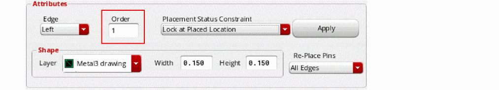

2
Pin Planning
This section explains how you can use the pin planning functionality to set constraints on and plan the placement of the top-level or level-1 pins in your design.
Using the Pin Placement Form
To use the Pin Placement form:
-
Open the Pin Placement form.
The Pin Planner tab is displayed listing all the pins in the current scope in the pin table.
The entries are expressed as termName:pinName:figName because the pin figure is the physical entity that you are placing. If a pin has more than two pin figures attached to it, but the pin figures have the same name, they are represented by a single entry in the pin table.
The constraints generated by pin planner also use the termName:pinName:figName convention, thus enabling the constraints system to distinguish between pin figures in constraints from pins. This format is used only when the pin has more than one figure. If a pin has only one figure then the old format termName:pinName is used when creating the constraint.
You can filter and otherwise manipulate the list using the controls provided. Click the Pin Name column heading to view an alphanumeric listing of the pins. For example:-
APINis listed beforeBPIN -
APIN2is listed beforeAPIN19 -
Bus bit
APIN<4>is listed before bus bitAPIN<18>
When a pin is selected in the pin table, the pin planner recognizes the corresponding net PRO and displays the values in the Layer, Width and Height fields. You can edit these values manually, while ensuring that the net PRO constraint values are not violated. If the specified pin size is less than theminWidthdefined in net PRO, then the pin size is reverted to its original value. If the specified pin Width or Height is equal to or greater than the net PRO value, then the new value is applied.
The pin planner supports the placement and distribution of member pins in pin groups in the specified guide region.
You can continue to use the pin planner to create and display side (alignment) constraints for pins. However, if you assign an alignment constraint to a pin that is already part of a pin group guide constraint, then an error message is displayed in the CIW.
(ICADVM20.1 Only) The Connectivity column annotates whether pins are connected to buried pins or multiple hard block pins. -
-
Use this form to do one or more of the following.
- Place pins in the same relative positions as in the schematic view. Click Schematic in the Place As In section.
- Place pins in the same relative positions as in the symbol view. Click Symbol in the Place As In section.
- Place pins in fixed positions on the boundary. See:
- Place pins in fixed positions that are not on the boundary. See:
- Place pins directly on lower-level instance terminals on the same layer. See:
- (ICADVM20.1 Only) Place soft block or top-level pins that are connected to multiple hard block pins. See:
- Place level-1 pins below top-level buried pins. See:
- Place pin groups with any given pin pitch spacing. See:
- Create vertical and horizontal rails. See:
- Report pins and their assigned locations.
-
Expand and collapse iterated bus pins (
Q<7:0>=Q<7>,Q<6>,Q<5>, and so on.) -
Handle multiple pins on the same net,
gnd.1gnd.2gnd.3.
- When you have finished setting pin constraints, use the Re-Place Pins pull-down to specify which pins can be moved by the placer. For more information about these options, see Pin Optimization.
-
Click Apply to set the new attributes for the specified pins.
-
Click Defaults to return all pins to their default positions.
Placing a Pin on a Boundary Edge
To place a pin in a fixed position on the boundary,
-
From the layout window menu bar, choose Place – Pin Placement.
The Pin Placement form is displayed. -
Choose Unplaced from the Status or Type drop-down list.
-
Select the pin you want to place from the pin table.
You can expand iterated bus pins (for example,A<7:0>) using the Expand button in the Iterated Pins group box. This expands the bus into individual pins, which you can then place individually with different constraints. -
From the Edge drop-down list, choose the edge on which the selected pins are to be placed. For rectangular boundaries, the edge sides are listed as Left, Top, Right, Bottom, Any, Level-1 pin, and As is.
For rectilinear boundaries, both the edge numbers and the edge sides are listed.
Edge numbers are assigned in the increasing order, starting with zero, which is assigned to the edge at the right-top vertex, followed by the adjoining edge in the anti-clockwise direction.
An edge side for rectilinear boundaries might correspond to one or more edges. In the above example, the "Top" edge side can correspond to edge numbers 0 or 2. Therefore, the pin planner has a choice of edges.The alignment Edge/Side constraint is disregarded and a warning message is displayed in the following situations:- Situation 1 - Edge number is specified for a cell with a rectangular boundary.
- Situation 2 - The specified edge does not have enough available slots.
- Situation 3 - The PR boundary is not a member of the alignment constraint.
For situations 1 and 2, although the alignment Edge/Side constraint is disregarded, the pitch value, if set, is honored. For situation 3, however, the pitch value is not honored. -
Choose Fix at Placed Location from the Placement Status Constraint drop-down list.
Fix at Placed Location places the pin at a location on the boundary and then fixes the pin at that location, meaning that it cannot be moved by the automatic placement functions; however, you can move it manually, for example, using the Edit – Move command. -
Click Apply to align the pin to the specified boundary edge in the layout.If required, use the Re-Place Pins pull-down to limit the pins that can be moved by the placer when you click Apply.The Status field is updated in the pin table and the label in the Placement Status Constraint field changes to show the coordinates of the center of the pin.
- Repeat step 3 through step 6 for each pin you want to place on the boundary.
- Click Close to close the Pin Placement form.
Placing Ordered Pins on a Boundary Edge
To place a group of pins in a specific order along a boundary edge:
-
From the layout window menu bar, choose Place – Pin Placement.
The Pin Placement form is displayed. -
Select one or more pins from the pin table.
Change the order of the pins by selecting a pin in the list and clicking on of the arrows that surround the Move pins label. The up and left arrows move items up in the list; the down and right arrows move items down.
Use the Swap order option to swap the position of two selected pins. - Choose the edge you want from the Edge drop-down list.
-
Type a number in the Order field.
You can type any number into the field; the selected pins are assigned an integer based on the order in which they are listed in the pin table. -
Click Apply to apply each pin assignment.If required, use the Re-Place Pins pull-down to limit the pins that can be moved by the placer when you click Apply.The pins are aligned to the specified boundary edge in the layout in the order you specified.
Placing a Pin in a Fixed Position not on the Boundary
To place a pin in a fixed location not aligned with the boundary,
- From the layout window menu bar, choose Edit – Move.
- In the layout window, select an unplaced pin and move it to the required location.
-
From the layout window menu bar, choose Place – Pin Placement.
The Pin Placement form is displayed. - Select the pin in the pin table.
- Choose Fix at Placed Location from the Placement Status Constraint drop-down list.
- Click Apply. The pin is fixed at its current location and is not aligned with any edge.
Placing a Pin on a Lower-level Instance Terminal
To place a pin directly onto its corresponding instance terminal at a lower level of the design hierarchy:
- From the layout window menu bar, choose Place – Pin Placement. The Pin Placement form is displayed.
- Select the pin from the pin table.
- Choose Level-1 pin from the Edge drop-down list.
- Choose No Constraint (Floating) from the Placement Status Constraint drop-down list.
- Click Apply. The pin you selected is placed over its corresponding instance terminal in the layout window.
The Connectivity column in the pin table annotates whether pins are connected to buried pins or multiple hard block pins. Pins are re-layered and re-sized automatically. Pin labels are updated if the t.
Placing Pins that Are Connected to Hard Block Pins (ICADVM20.1 Only)
There might be situations where one top-level or level-1 pin is connected to two or more hard block pins. To place such pins:
-
From the layout window menu bar, choose Place – Pin Placement.
The Pin Placement form is displayed. - Select the soft block or top-level pin from the pin table.
- Choose To Hard Block Multi Pin from the Edge drop-down list.
- Choose No Constraint (Floating) from the Placement Status Constraint drop-down list.
- Click Apply.
The Connectivity column in the pin table annotates whether pins are connected to buried pins or multiple hard block pins.
Additional pins are created in the soft block (or at the top-level) to match the number of pins in the hard block. Therefore, each soft block or top-level pin is connected to a corresponding hard block pin, as shown below:
A summary report is displayed in the CIW that provides detailed information about hard block pin placement:
The summary report includes the following information:
- Number of soft pins found.
- Number of soft block pins that are aligned to hard block pins.
- Number of soft block pins that could not be aligned to hard block pins.
- Number of new soft pins created.
- Number of hard pins found.
- Number of hard block pins to which soft block pins have been aligned.
- Number of hard block pins to which soft block pins could not be aligned.
- A list of messages generated while placing soft block pins that are connected to multiple hard block pin.
Placing Buried Pins (ICADVM20.1 Only)
Buried pins are the top-level pins that are also bound by a level-1 PR boundary. To place a level-1 pin below a top-level buried pin:
-
From the layout window menu bar, choose Place – Pin Placement.
The Pin Placement form is displayed. - Choose Level-1 Pins in the Edit region.
- Select the level-1 pin from the pin table.
-
Choose To Buried Pin from the Edge drop-down list.
- Choose No Constraint (Floating) from the Placement Status Constraint drop-down list.
- Click Apply.
The level-1 pin is moved below the top-level pin. Its size and layer are matched to the buried pin. The status of both the pins (level-1 pin and buried pin) is marked as Fixed in the Status column of the pin table.
Spacing Pins
Spacing values are enforced only between adjacent pins on an edge, even if the spacing is set between two non-adjacent pins. If you specify a spacing between a pin and an iterated pin, the software applies the spacing between the last pin of the iterated pin and the individual pin. If the specified spacing cannot be satisfied, you see a warning in the CIW and the pins are not moved.
To set the exact distance between two or more ordered pins or between the individual bits of a bus pin,
-
From the layout window menu bar, choose Place – Pin Placement.
The Pin Placement form is displayed. - Filter the list of pin names as required using the Display drop-down list.
- Select the pins from the pin table.
-
In the Pin Spacing group box, type the spacing you require in the Value field, choose the type of spacing from the Spacing type pull down, and check Update Constraints to automatically update any constraints (for example, alignment constraints) associated with the selected pins.If a pin to be spaced has the alignment constraint set up, the placer reads the constraint to determine the appropriate access direction for the pin.
-
Click one of the Space buttons, depending on which pin is to be the reference pin for the spacing operation. For information about the spacing options, see Pin Optimization.
Converting a Pin into a Rail
-
From the layout window menu bar, choose Place – Pin Placement.
The Pin Placement form is displayed. - Choose Unplaced from the Status or Type drop-down list.
-
Select a pin from the pin table.
- Choose an edge from the Edge drop-down list.
- Click Apply. The pin is placed on the boundary. If you have selected multiple pins, they will all be placed on the boundary.
-
Select the pin in the layout and do one of the following:
When a pin is changed into a rail, it becomes aligned with two edges of the boundary. For a horizontal rail, the alignment is to the left and right edges. For a vertical rail, the alignment is the bottom and top edges. The rail stretches with the boundary in the Constraint-Aware Editing mode.
- (Optional) Use the Constraint Manager Assistant to view the alignment constraints on the rail.
Converting a Rail into a Pin
To convert a rail back into a pin,
-
From the layout window menu bar, choose Place – Pin Placement.
The Pin Placement form is displayed. - In the layout window, select the rail you want to change.
-
In the Pin Placement form, click unHRail or unVRail as required.
The rail is converted back into a pin and returned to its original size and edge, regardless of the railing direction.
Interleaving the Bits of Iterated Pins
Use the Pin Placement form’s Interleave button to interleave the bits of the selected iterated pins and automatically apply an order constraint to constrain how the individual bits will be placed.

The selected set must contain at least one pin already assigned to an edge. Any unplaced pins are automatically placed on the same edge and their bits are interleaved. Interleave does not work if the pins in the selected set are assigned to more than one edge or to no edge at all. In this case, the command generates an error message and does nothing.
If you select both buses and single pins, interleave processes them in two steps: first it interleaves the buses, then it gets the single pin array, splits it into two parts, and interleaves those also.
Before Interleave:
A<0:2> A1 B<0:2> B1 C<0:1> C1 D1 E1 F1
After Interleave:
A<0> B<0> C<0> A<1> B<1> C<1> A<2> B<2> A1 D1 B1 E1 C1 F1
The Uninterleave command works with pins assigned to any number of edges. However, it does not move pins from one edge to another, but instead deals with the pins on each edge separately. Uninterleave does nothing with unplaced pins - they are ignored.
Return to top